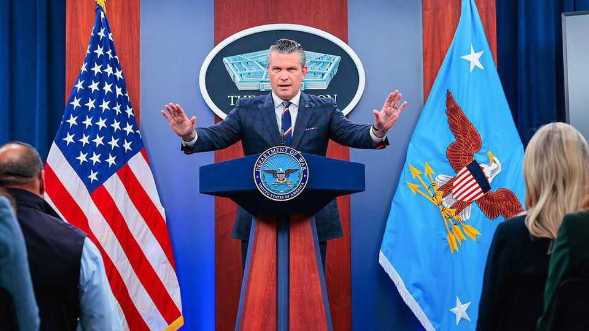

Democrats’ strategy for ending the war in Iran
An unsuccessful attempt to impeach Pete Hegseth is a sign of more trouble ahead

Nov 12th 2026
THE LAWMAKERS who attended an event hosted by Elect Democratic Women, a pro-choice group, on November 10th are unlikely to have much sympathy for Pete Hegseth, Donald Trump’s secretary of war, who has sacked female generals and questioned the role of women in the armed forces. But Mr Hegseth might thank them for his narrow escape in an impeachment vote in the House of Representatives that afternoon. Eleven Democrats missed the vote—more than the seven-vote margin—with some delayed in traffic on their way back from the event.
That failure points to a bigger problem for Democrats. More than seven in ten voters who crushed Mr Trump’s party in the midterms on November 3rd said in exit polls that the war in Iran had been a crucial or major factor in their vote. Democrats are keen to respond to that fury, yet measures to remove Mr Hegseth, let alone end the war, will take time.
The articles of impeachment introduced by Thomas Massie, a maverick (and outgoing) Republican congressman, accused Mr Hegseth of starting the war illegally, ignoring congressional resolutions to withdraw and showing disregard for civilian harm, as well as transgressions relating to Venezuela, Yemen and strikes on drug-smuggling boats. Democrats and Republicans alike had expected that several Republicans would break with their party and vote against Mr Hegseth. In the end, Mr Massie was the only dissident. The department of war posted an AI-generated image of the congressman weeping.
An impeachment vote will almost certainly succeed in January, when Democrats have a majority and better-whipped members. Even then, Mr Hegseth would be tried in the Senate, where at least 11 Republicans would need to break ranks with their party and join Democrats seeking to remove him.
Many Republicans are privately advising the White House to replace Mr Hegseth now, while a Republican-controlled Senate could confirm a successor. Mr Trump seems untroubled. “He’s guilty of two things,” said the president on November 8th. “Basically winning two wars.”
As impeachment efforts rumble forward, Democrats will seek other ways to bring the war itself to a halt. In theory, the War Powers Resolution of 1973, passed amid broad discontent over the war in Vietnam, obliges presidents to obtain congressional authorisation to continue fighting after 60 days of conflict, with a 30-day extension allowed due to “unavoidable military necessity”. Presidents of both parties have ignored that injunction, however, dismissing it as unconstitutional. In June, in a sign of bipartisan frustration, Congress passed a resolution directing the president to remove armed forces from the conflict in Iran. It had the impact of a scolding letter. An attempt at another resolution failed in the Senate in September.
Chances of enforcing the War Powers Resolution in court will improve slightly in January, when Democrats can sue as the House. However, courts typically defer to presidents on matters of war. Congress could introduce new legislation but, like the impeachment of Mr Hegseth, any bill would need 67 Senate votes to overcome Mr Trump’s veto.
The more effective tool, in theory, would be to use Congress’s power of the purse. To avoid a government shutdown on December 11th, Congress must pass either a full funding bill or, more likely, a continuing resolution, a stopgap measure that extends current spending levels for a few months. A National Defence Authorisation Act, which spells out Pentagon policies and pay and which has passed each year since 1961, is also under negotiation. Charles Kieffer, a former staff director of the Senate appropriations committee, says that Rosa DeLauro and Patty Murray, the senior Democratic members of the House and Senate appropriations committees, respectively, might demand that Mr Trump end the war in exchange for passing a continuing resolution, though he suspects that neither would shut down the government in December over the issue.
Indeed, using defence spending as leverage is fraught with both material and political risks. The Iran war and other military operations has meant that the Pentagon has a gaping financial hole. Even if a continuing resolution were to be passed, it would leave the Pentagon with $400m less cash per day compared with last year, and $1.7bn per day short of the astonishing sums planned this year under Mr Trump’s proposed $1.5trn budget, notes Elaine McCusker, a senior fellow at the American Enterprise Institute, a think-tank, who served as the Pentagon’s top budget official during Mr Trump’s first term. “People may not understand the kind of situation the military is in right now,” she says. “The people who get hurt by budget delays, shortfalls and uncertainty are not the people in a position of power to do anything about it.”
Democrats therefore acknowledge that they have little chance of choking off funds for the war until next year, when they control Congress. Even then, it will not be easy. Mr Kieffer recalls Democrats’ efforts to force George W. Bush to withdraw troops from Iraq in 2007, when the party controlled both chambers, by including that demand in a supplemental budget request, a top-up to the regular defence budget. Mr Bush vetoed that measure. Though it seemed ineffective in substance, “it gave the Democrats the political cover that they needed to go ahead and provide funding for the troops”, says Mr Kieffer.
Some Democrats hope that Republicans are so weary of the war that enough might support measures to hasten its end. Their near-lockstep vote to shield Mr Hegseth from impeachment is not encouraging. Meanwhile, the war drags on. America attacked Iran’s Qeshm island just before the elections. Iran continues to strike one oil tanker a day, on average. ■
Stay on top of American politics with The US in brief, our daily newsletter with fast analysis of the most important political news, and Checks and Balance, a weekly note that examines the state of American democracy and the issues that matter to voters.